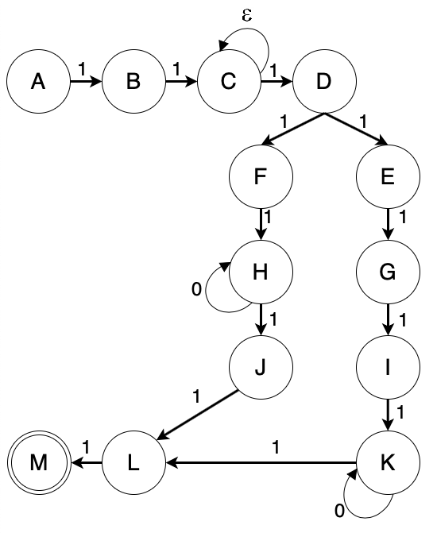

Aplikasi Pemanfaatan DFA/NFA
Finite State Automata (FSA) disebut juga Finite Automata (FA) merupakan suatu model matematika dari suatu sistem dan yang menerima input dan menghasilkan output diskrit. Finite State Automata memiliki state yang banyaknya berhingga (terbatas)
dan dapat berpindah-pindah dari satu state ke state lain. Perubahan state ini dinyatakan dengan fungsi transisi. State adalah kondisi atau keadaan atau kedudukan.
Dalam FSA terdapat Deterministic FInite Automata (DFA) dan Non-Deterministic Finite Automata (NFA). Pemanfaatan DFA/NFA yang sering ditemui pada Vending Machine maupun ATM. Namun, selain itu NFA/DFA juga bisa dimanfaatkan untuk
hal lain, misalnya dalam pengisian krs mahasiswa.
NFA dapat diaplikasikan pada vending machine
NFA dapat diaplikasikan dalam proses transaksi di ATM
Aplikasi Pemanfaatan DFA/NFA pada Proses Transaksi Via ATM
Salah satu contoh penerapan finite state automata yaitu transaksi via ATM. Dalam transaksi via ATM ini, dibagi menjadi beberapa state untuk memudahkan pengguna.
01 Memasukkan kartu atm
02 Memilih bahasa
03 Masukkan PIN
04 Memilih jenis transaksi
05Jika memilih transaksi tunai, dapat memilih nominal uang yang akan diambil lalu dilanjut dengan melakukan proses penarikan tunai
06Jika memilih transfer, dilanjutkan dengan memilih bank dan nomor rekening tujuan serta nominal transfernya.
Gambar 1. Diagram State
Diagram State
Gambar 1 ini merupakan gambar diagram state dari transaksi Via ATM. Dengan keterangan sebagai berikut :
Q = {A, B, C, D, E, F, G, H, I, J, K, L, M}
∑ = { ε, 1, 0}
S = {A}
F = {M}
Δ = {((A, 1)B), ((B, 1)C), ((C, Ɛ)C), ((C, 1)D), ((D, 1)E),((D, 1)F), (E, 1)G), ((F, 1)H), ((G, 1)I), ((H, 1)J), ((I, 1)K), ((J, 1)L), ((K, 1)L), ((L, 1)M)}}
Keterangan pertama yaitu untuk himpunan simbol input yang menyatakan apa yang dilakukan nasabah, yaitu ε = string kosong, 1 = melanjutkan proses transaksi, 0 = melakukan perulangan.
Keterangan kedua yaitu untuk state yang menyatakan proses transaksi, yaitu A = memasukkan kartu ATM, B = memilih bahasa, C = memasukkan pin, D = memilih jenis transaksi, E = memilih jenis transaksi transfer, F = memilih jenis transaksi tarik tunai, G = daftar kode bank, H = masukkan nominal tarik tunai, I = masukkan kode bank dan rekening tujuan, J = mengambil uang, K = masukkan nominal transfer, L = proses transaksi berhasil, M = mengambil kartu ATM.
Gambar 2. Tabel Relasi
| Δ | ε | 0 | 1 |
|---|---|---|---|
| A | ∅ | ∅ | B |
| B | ∅ | ∅ | C |
| C | C | ∅ | D |
| D | ∅ | ∅ | E,F |
| E | ∅ | ∅ | G |
| F | ∅ | ∅ | H |
| G | ∅ | ∅ | I |
| H | ∅ | H | J |
| I | ∅ | ∅ | K |
| J | ∅ | ∅ | L |
| K | ∅ | ∅ | L |
| L | ∅ | ∅ | M |
| M | ∅ | ∅ | ∅ |
Tabel Relasi
Tabel ini menjelaskan bagaimana perpindahan state yang terjadi jika ada input yang dimasukkan.
Contohnya pada state D (nasabah memilih transaksi) jika mendapatkan input ε (nasabah tidak menginput apapun)
maka akan bernilai kosong. Jika mendapat input 0 (perulangan) maka juga akan bernilai kosong. Tetapi, jika mendapat input 1(nasabah sudah memilih transfer atau tarik tunai) maka akan melanjutkan transaksi dan akan ada
2 kemungkinan state yaitu pindah ke state E (memilih transaksi transfer) atau F (memilih transaksi tarik tunai).
Contoh lainnya pada state M yaitu state terakhir dimana nasabah mengambil kartu ATM bukan menginput lagi. Karena itu, tidak akan ada perpindahan state lagi.
Kesimpulan
Pada transaksi via ATM ini didalamnya terdapat pengaplikasian dari Finite State Automata yaitu Non-Deterministic Finite Automata (NFA). Karena dapat dilihat dalam transaksi via ATM yang dibagi menjadi beberapa state (dalam contoh ada 13 state) dan juga seperti dalam Non-Deterministic Finite Automata yang memungkinkan satu simbol menimbulkan transisi ke lebih dari satu kondisi dan memberikan beberapa kemungkinan perubahan sehingga keluarannya tidak dapat dipastikan.
Referensi
Nendisha, Azri RIshard, Magdalena A. Ineke Pakereng. 2017. Penerapan Finite State Automata Pada Proses Transaksi Via ATM. Salatiga:Universitas KristenSatya Wacana
Sumber gambar : https://jabar.idntimes.com/hype/humor/danti/15-vending-machine-paling-anti-mainstream-di-dunia-canggih-atau-aneh-regional-jabar